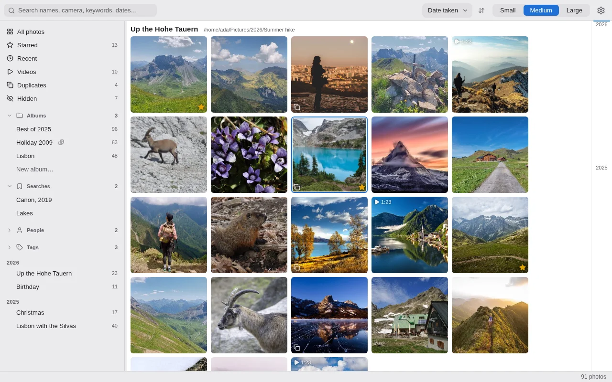
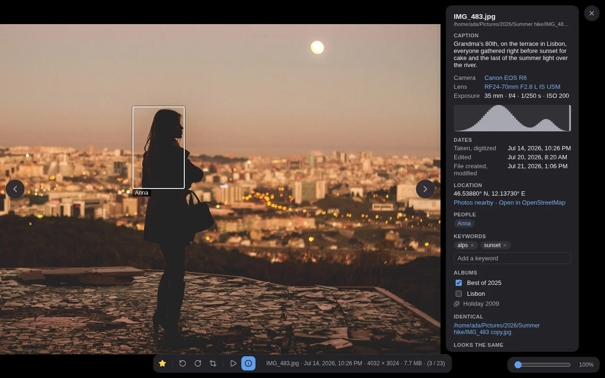

photon
A fast, local photo manager. A spiritual successor to Picasa 3.
Download Source on GitHubLinux · macOS · Windows — free and open source, MIT licensed

Your photos stay where they are
photon watches your folders in place. It never moves, renames or changes a photo: it keeps a small library and a thumbnail cache in your user directories, and rotations and crops live there too, applied only on the way to the screen. No account, no cloud, no import step, and no telemetry: photon does not connect to the internet at all.
That includes a NAS or a network share. Thumbnails are cached on your own computer, so
browsing does not wait on the network, and a rescan reads only the files whose size or date
changed. Look-alikes are found from those local thumbnails, and the search for exact copies
reads only files that share a size with another. When the share is offline, photon leaves
the library as it is,
checks every 30 seconds, and picks up when it is back. It does not look inside a drive's or
a share's recycle bin ($RECYCLE.BIN, #recycle,
@Recycle), so a photo you delete leaves the library.
What it does
Picks up where Picasa left off
Stars, people, albums and hidden photos are read from Picasa's .picasa.ini. A star set in photon is written back, so both programs agree.
Fast with big libraries
Hundreds of thousands of photos scroll smoothly, grouped by folder, day, month or year, or sorted by date, name or size, with a strip of years to jump along. New and changed files are picked up as they appear on disk.
Reorganise in your file manager
Rename or move photos and folders inside the folders photon watches, and they keep their albums, keywords, turns and crops, and the names on their faces.
Search that knows your photos
File and folder names, camera, lens, 50mm, f/1.8, keywords, captions and dates. Narrow it with tag:zoo, is:starred or iso:>=1600, bound it with from:2019-06, turn a term round with a hyphen. The ? in the box lists every term. Save a search to run it again.
Albums and keywords
Make your own albums. Browse the keywords Lightroom, Bridge or digiKam wrote into your photos, and add your own to one photo or to many. Rename or remove a tag in photon; the photos are not rewritten.
People
Switch on face detection and photon finds and groups the faces itself, on your computer only. Name them on the People page, in the grid or in the viewer, and search with person:anna, has:face or faces:2+.
Duplicates and look-alikes
Finds byte-identical copies and the same picture after a resize or re-save, and compares them side by side.
Hides, never deletes
Put a photo or a whole folder away with H or a right-click. It leaves every view, search and count, and comes back from the Hidden view. The file is not touched.
Rotate, crop, export
Non-destructive turns and crops, a slideshow in order or shuffled, and export of copies to a folder of your choice, at full size or scaled down for a mail.

Also
- Where a photo was taken: the info panel finds the photos taken nearby, and opens the spot on OpenStreetMap in your browser, only when you click it.
- On this day, Starred, Recent and Videos are one click away in the sidebar.
- Zoom to the photo's own pixels with a double-click, + and -, or Ctrl and the wheel.
- Copy a photo to the clipboard with Ctrl+C (⌘C on a Mac), as photon shows it, open it in your default app, or reveal it in the file manager.
- Keys for most things: ? lists them all, . stars, H hides, and Shift with the arrows selects, as dragging a rectangle over the photos does.
- Light and dark, following your desktop or pinned; three photo sizes; a sidebar that gets out of the way with Ctrl+B.
- Rename a folder in photon without renaming the directory on disk.
- Statistics: photos by year, your most used cameras and lenses, each a link to its photos.
- Getting started: photon watches your Pictures folder on its first launch, and a folder dropped onto its window is added.
Coming from Picasa
Point photon at the folders Picasa watched. It reads what Picasa kept beside your photos,
in each folder's .picasa.ini, so none of it has to be exported or imported:
- Stars, both ways: a star set in photon is written back into that file,
touching only its
star=line, so Picasa sees it too. - People you named, outlined on the photo in the viewer. Give a group of faces photon found a name Picasa uses, and the two are one person.
- Albums, kept up to date as you change them in Picasa.
- Hidden photos stay hidden.
- Captions and tags, which Picasa saved into the photos themselves.
Not carried over: Picasa's own edits (crops, filters, retouching) are not applied, and an
album Picasa kept only in its database, never in a folder's .picasa.ini, does
not appear.
What it doesn't do
- No camera RAW or HEIC. Reading them means shipping a large C library, and photon keeps its C to a few small ones compiled into it, so it needs no system libraries beyond the system's web view.
- No editing beyond rotating and cropping.
- No cloud, sync or sharing. Your library stays on your computer.
- No phone app.
Install
Get the installer for your system from the latest release.
| System | File |
|---|---|
| Linux | .AppImage, or .deb for Debian and Ubuntu |
| macOS | .dmg — aarch64 for Apple Silicon, x64 for Intel |
| Windows | .msi |
photon reads JPEG, PNG, GIF, WebP, TIFF, BMP and AVIF, and plays MP4, M4V, MOV and WebM video through the system's own support. Camera RAW and HEIC are not read.
The installers are not code-signed, so macOS and Windows will warn the first time you open
photon. The README
explains how to get past that on each system, and how to check a download against its
SHA256SUMS.
Questions
Where does photon keep its library?
In a folder called io.github.bsg62.photon: the library (library.db)
under your user data directory, the thumbnails under your cache directory.
| System | Library | Thumbnails |
|---|---|---|
| Linux | ~/.local/share/ | ~/.cache/ |
| macOS | ~/Library/Application Support/ | ~/Library/Caches/ |
| Windows | %APPDATA%\ | %LOCALAPPDATA%\ |
What should I back up?
Your photos, as always. Beyond them, the library folder holds what exists only in photon: its own albums, keywords you added, rotations and crops, photos and folders you hid, the names you gave to faces and to folders, saved searches, tag renames and settings. Copy it while photon is closed. The thumbnails are rebuilt on their own if lost. Stars, and everything else photon reads from Picasa's files or from the photos, live with the photos already.
Can I move my library to another computer?
Yes, if the photos are at the same paths there: the library remembers each photo by its full path. Otherwise, let the new computer build its own library. Stars and Picasa's people and albums come back by themselves; what exists only in photon, above, does not.
What happens when I rename or move photos?
Inside the folders photon watches, a renamed or moved photo or folder keeps what photon
knows about it: albums, keywords, turns and crops, its hidden flag and the names on its
faces. photon recognises the file by its size, dates and dimensions, and where two photos
fit equally well it does not guess. A photo moved out of the watched folders and brought
back later is a new photo. A star lives in the folder's .picasa.ini under the
file's name, so it follows a renamed or moved folder but not a single photo renamed or
moved on its own. The
README lists
what is followed and what is not.
Can I keep using Picasa alongside it?
Yes. Both read and write the same .picasa.ini, and photon picks up a change
Picasa makes within a few seconds of it saving the file. If Picasa has the file open at the moment you set
a star in photon, photon says so and changes nothing; try again a moment later.
How do I uninstall it?
Remove the app the usual way for your system, then delete the two
io.github.bsg62.photon folders above. Your photos are not affected either way.